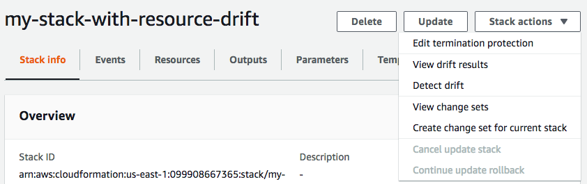

Terjemahan disediakan oleh mesin penerjemah. Jika konten terjemahan yang diberikan bertentangan dengan versi bahasa Inggris aslinya, utamakan versi bahasa Inggris.
Mendeteksi penyimpangan di seluruh tumpukan CloudFormation
Melakukan operasi deteksi penyimpangan pada tumpukan menentukan apakah tumpukan telah menyimpang dari konfigurasi templat yang diharapkan, dan mengembalikan informasi terperinci tentang status penyimpangan setiap sumber daya dalam tumpukan yang mendukung deteksi penyimpangan.
Untuk mendeteksi penyimpangan pada seluruh tumpukan menggunakan AWS Management Console
Buka AWS CloudFormation konsol di https://console.aws.amazon.com/cloudformation
. -
Dari daftar tumpukan, pilih tumpukan tempat Anda ingin melakukan deteksi penyimpangan. Di panel detail tumpukan, pilih Tindakan tumpukan, lalu pilih Deteksi penyimpangan.
CloudFormation menampilkan bilah informasi yang menyatakan bahwa deteksi drift telah dimulai untuk tumpukan yang dipilih.
-
Tunggu hingga CloudFormation menyelesaikan operasi deteksi drift. Saat operasi deteksi drift selesai, CloudFormation perbarui status Drift dan waktu pemeriksaan drift terakhir untuk tumpukan Anda. Bidang ini tercantum di bagian Gambaran Umum di panel Info tumpukan dari halaman detail tumpukan.
Operasi deteksi penyimpangan mungkin memakan waktu beberapa menit, tergantung pada jumlah sumber daya yang disertakan dalam tumpukan. Anda hanya dapat menjalankan operasi deteksi drift tunggal pada tumpukan tertentu pada saat yang sama. CloudFormation melanjutkan operasi deteksi drift bahkan setelah Anda mengabaikan bilah informasi.
-
Meninjau hasil deteksi penyimpangan untuk tumpukan dan sumber daya. Dengan tumpukan Anda dipilih, dari menu Tindakan tumpukan pilih Lihat hasil penyimpangan.
CloudFormation mencantumkan status drift keseluruhan tumpukan, selain deteksi drift terakhir kali dimulai pada tumpukan atau sumber daya individualnya. Tumpukan dianggap telah menyimpang jika satu atau lebih dari sumber dayanya menyimpang.

Di bagian Status penyimpangan sumber daya, CloudFormation daftar setiap sumber daya tumpukan, status driftnya, dan deteksi drift terakhir kali dimulai pada sumber daya. ID logis dan ID fisik setiap sumber daya ditampilkan untuk membantu Anda mengidentifikasinya. Selain itu, untuk sumber daya dengan status MODIFIED, CloudFormation menampilkan detail penyimpangan sumber daya.
Anda dapat mengurutkan sumber daya berdasarkan status penyimpangannya menggunakan kolom Status Penyimpangan.
-
Untuk melihat detail sumber daya yang dimodifikasi.
-
Dengan sumber daya yang dimodifikasi dipilih, pilih Lihat detail penyimpangan.
CloudFormation menampilkan halaman detail drift untuk sumber daya itu. Halaman ini mencantumkan nilai properti yang diharapkan dan saat ini dari sumber daya, dan perbedaan apa pun di antara keduanya.
Untuk menyoroti perbedaan, di bagian Perbedaan pilih nama properti.
-
Properti yang ditambahkan disorot dalam warna hijau di kolom Saat ini di bagian Detail.
-
Properti yang dihapus disorot dalam warna merah di kolom Diharapkan di bagian Detail.
-
Properti yang nilainya telah diubah disorot warna kuning di kolom Diharapkan dan Saat ini.
-
-

-
Untuk mendeteksi penyimpangan pada seluruh tumpukan menggunakan AWS CLI
Untuk mendeteksi penyimpangan pada seluruh tumpukan menggunakan AWS CLI, gunakan aws
cloudformation perintah berikut:
-
detect-stack-driftuntuk memulai operasi deteksi penyimpangan di tumpukan. -
describe-stack-drift-detection-statusuntuk memantau status operasi deteksi penyimpangan tumpukan. -
describe-stack-resource-driftsuntuk meninjau detail operasi deteksi penyimpangan tumpukan.
-
Gunakan
detect-stack-driftuntuk mendeteksi penyimpangan di seluruh tumpukan. Tentukan nama tumpukan atau ARN. Anda juga dapat menentukan ID logis dari setiap sumber daya tertentu yang ingin Anda gunakan sebagai filter untuk operasi deteksi penyimpangan ini.$aws cloudformation detect-stack-drift --stack-namemy-stack-with-resource-drift{ "StackDriftDetectionId": "624af370-311a-11e8-b6b7-500cexample" } -
Karena operasi deteksi penyimpangan tumpukan dapat berjalan lama, gunakan
describe-stack-drift-detection-statusuntuk memantau status operasi penyimpangan. Perintah ini mengambil ID deteksi penyimpangan tumpukan yang dikembalikan oleh perintahdetect-stack-drift.Dalam contoh di bawah ini, kami telah mengambil ID deteksi penyimpangan tumpukan yang dikembalikan oleh contoh
detect-stack-driftdi atas dan meneruskannya sebagai parameter kedescribe-stack-drift-detection-status. Parameter mengembalikan detail operasi yang menunjukkan bahwa operasi deteksi penyimpangan telah selesai, sumber daya tumpukan tunggal telah menyimpang, dan bahwa seluruh tumpukan dianggap telah menyimpang sebagai hasilnya.$aws cloudformation describe-stack-drift-detection-status --stack-drift-detection-id624af370-311a-11e8-b6b7-500cexample{ "StackId": "arn:aws:cloudformation:us-east-1:099908667365:stack/my-stack-with-resource-drift/489e5570-df85-11e7-a7d9-50example", "StackDriftDetectionId": "624af370-311a-11e8-b6b7-500cexample", "StackDriftStatus": "DRIFTED", "Timestamp": "2018-03-26T17:23:22.279Z", "DetectionStatus": "DETECTION_COMPLETE", "DriftedStackResourceCount": 1 } -
Ketika operasi deteksi penyimpangan tumpukan selesai, gunakan perintah
describe-stack-resource-driftsuntuk meninjau hasil, termasuk nilai properti aktual dan yang diharapkan untuk sumber daya yang telah menyimpang.Contoh di bawah ini menggunakan parameter
stack-resource-drift-status-filtersuntuk meminta informasi penyimpangan tumpukan untuk sumber daya yang telah dimodifikasi atau dihapus. Permintaan mengembalikan informasi tentang satu sumber daya yang telah dimodifikasi, termasuk detail tentang dua propertinya yang nilainya telah diubah. Tidak ada sumber daya yang telah dihapus.$aws cloudformation describe-stack-resource-drifts --stack-namemy-stack-with-resource-drift--stack-resource-drift-status-filters MODIFIED DELETED{ "StackResourceDrifts": [ { "StackId": "arn:aws:cloudformation:us-east-1:099908667365:stack/my-stack-with-resource-drift/489e5570-df85-11e7-a7d9-50example", "ActualProperties": "{\"ReceiveMessageWaitTimeSeconds\":0,\"DelaySeconds\":120,\"RedrivePolicy\":{\"deadLetterTargetArn\":\"arn:aws:sqs:us-east-1:099908667365:my-stack-with-resource-drift-DLQ-1BCY7HHD5QIM3\",\"maxReceiveCount\":12},\"MessageRetentionPeriod\":345600,\"MaximumMessageSize\":262144,\"VisibilityTimeout\":60,\"QueueName\":\"my-stack-with-resource-drift-Queue-494PBHCO76H4\"}", "ResourceType": "AWS::SQS::Queue", "Timestamp": "2018-03-26T17:23:34.489Z", "PhysicalResourceId": "https://sqs.us-east-1.amazonaws.com/099908667365/my-stack-with-resource-drift-Queue-494PBHCO76H4", "StackResourceDriftStatus": "MODIFIED", "ExpectedProperties": "{\"ReceiveMessageWaitTimeSeconds\":0,\"DelaySeconds\":20,\"RedrivePolicy\":{\"deadLetterTargetArn\":\"arn:aws:sqs:us-east-1:099908667365:my-stack-with-resource-drift-DLQ-1BCY7HHD5QIM3\",\"maxReceiveCount\":10},\"MessageRetentionPeriod\":345600,\"MaximumMessageSize\":262144,\"VisibilityTimeout\":60,\"QueueName\":\"my-stack-with-resource-drift-Queue-494PBHCO76H4\"}", "PropertyDifferences": [ { "PropertyPath": "/DelaySeconds", "ActualValue": "120", "ExpectedValue": "20", "DifferenceType": "NOT_EQUAL" }, { "PropertyPath": "/RedrivePolicy/maxReceiveCount", "ActualValue": "12", "ExpectedValue": "10", "DifferenceType": "NOT_EQUAL" } ], "LogicalResourceId": "Queue" } ] }